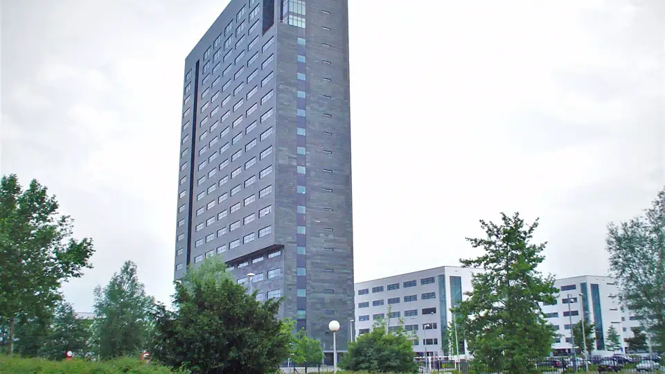
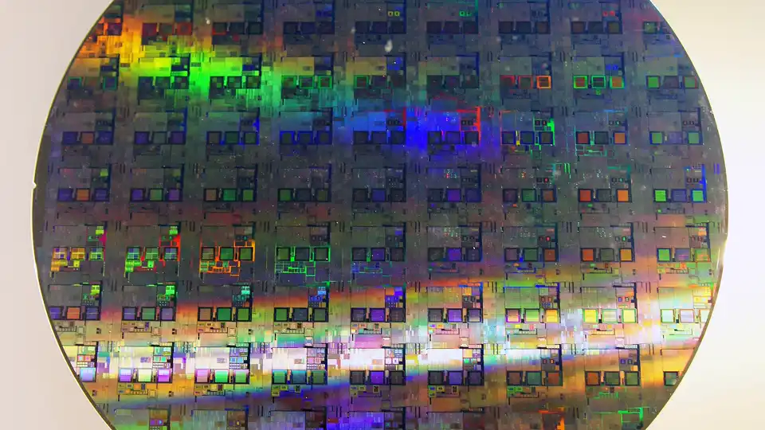

ASML's record €11.7B quarter hides a warning: even a 30% capacity jump won't satisfy AI chip demand in 2027–2028
ASML reported a record quarter on Wednesday — €11.7 billion in sales, a 57.5% gross margin, €5.0 billion in net income. Then CEO Christophe Fouquet told investors the number that actually matters: even with capacity growing 30%, ASML's planned 2027 and 2028 chip-tool supply will not meet customer demand, because AI-related investment keeps pulling equipment forecasts higher.
- Q3 2026 (published October 14, 2026, Veldhoven): €11.662 billion total net sales (guidance €11.0–12.0 billion), €6.7 billion gross profit for a 57.5% margin, net income of €4.96 billion (€12.95 per share).
- Shipped 113 new and 8 used lithography systems, up from 86 new systems in Q2; the margin beat came from the installed base — Installed Base Management sales hit €3.29 billion, €400 million above guidance on demand for productivity upgrades (CFO Roger Dassen).
- Net income included €500 million from the revaluation of the first tranche ASML bought from Mistral AI.
- Guidance: Q4 2026 net sales of €14.2–15.2 billion at around 57% margin; full-year 2026 sales of €44–45 billion at roughly 56% margin.
- The warning: “Our customers continue to increase their short- and medium-term equipment demand forecasts with us, driven primarily by their views on the size and duration of AI-related investments” — and planned 2027 and 2028 supply “will not fully meet the demand of our customers.”
- ASML plans to lift low-NA EUV and DUV immersion capacity by 30% in 2027 and is investigating ways to increase 2028 capacity beyond that — while customers are already lining up for 2029 and 2030.
A record quarter, by the numbers
The Dutch lithography giant's third-quarter 2026 results, published Wednesday from Veldhoven, landed toward the high end of its own guidance: €11.662 billion in total net sales (guidance was €11.0–12.0 billion), €6.7 billion in gross profit for a 57.5% margin, and net income of €4.96 billion — €12.95 per share. The company shipped 113 new and 8 used lithography systems in the quarter, up from 86 new systems in Q2.
The margin beat came from the installed base, not new machines. Installed Base Management sales — services and field upgrades — hit €3.29 billion, above guidance, as chipmakers paid to squeeze more output from the tools they already own. In ASML's results video, CFO Roger Dassen said that line came in €400 million above guidance on demand for productivity upgrades, and that it largely drove the gross-margin beat. Net income also included €500 million from the revaluation of the first tranche ASML bought from Mistral AI.
ASML guided Q4 2026 net sales of €14.2–15.2 billion with a gross margin around 57%, and now expects full-year 2026 sales between €44 and €45 billion at roughly 56% gross margin.
The warning that matters: 2027 and 2028
The headline figures are strong; the outlook language is stronger. "Our customers continue to increase their short- and medium-term equipment demand forecasts with us, driven primarily by their views on the size and duration of AI-related investments," Fouquet said in the release. "With such strong visibility and an order book momentum that continues to increase quarter on quarter this year, we now expect that our supply as currently planned for both 2027 and 2028 will not fully meet the demand of our customers."
ASML is already planning to lift low-NA EUV and DUV immersion capacity by 30% in 2027 — and says it is "investigating ways to increase capacity for 2028 beyond the 30% increase we previously communicated," while continuing to sell productivity upgrades that add effective wafer capacity without new tools.

Customers are lining up for 2029 and 2030
Perhaps the most telling line in the release: "In light of their demand visibility, some customers are expressing an interest in placing orders with us for 2029 and even 2030." For equipment that costs hundreds of millions per system and ships years after order, that kind of forward booking is chipmakers betting the AI buildout has a long runway — and that ASML's tools remain the scarcest link in it.
ASML is the only supplier of extreme ultraviolet lithography machines, the systems that print the smallest features on leading-edge chips — every AI accelerator fab depends on them. When the sole source of the industry's bottleneck equipment says it cannot build enough for the next two years, it is effectively a ceiling forecast on how fast new AI compute can come online.
Cash, buybacks, a dividend
The balance sheet is flush: cash plus short-term investments stood at €12.74 billion at quarter-end. ASML bought back €4.1 billion of its own shares in the quarter under its 2026–2028 buyback program, and will pay an interim dividend of €1.88 per share on November 4, 2026.

Why this is an AI story, not a chip story
ASML's release reads like a weather report for the AI economy. Every upward revision in "customer demand forecasts" traces back to one cause, stated explicitly: the size and duration of AI-related investments. Data centers, model training clusters, inference fleets — they all terminate in silicon, and the silicon pipeline's narrowest point just told you it will stay narrow through 2028. The AI boom's binding constraint is no longer money or power. It is the machines that print the chips.
Frequently asked questions
How good was ASML’s Q3 2026?
A record: €11.7 billion in sales at a 57.5% gross margin and €5.0 billion in net income — toward the high end of its own guidance, with 113 new and 8 used lithography systems shipped.
Why does ASML warn about 2027 and 2028 despite the record?
CEO Christophe Fouquet told investors that customers keep raising their equipment demand forecasts on AI-related investment — so even with a planned 30% capacity increase, ASML’s 2027 and 2028 tool supply will not fully meet demand.
What is ASML doing about the capacity shortfall?
It is already planning to lift low-NA EUV and DUV immersion capacity by 30% in 2027, is investigating ways to increase 2028 capacity beyond the 30% previously communicated, and keeps selling productivity upgrades that add effective wafer capacity without new tools.